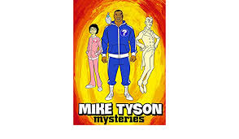

knife tyson
dit is de officiele site van Knife tyson de man die onze wereld meerdere keren heeft gered. hier lees je verhalen van oog getuigen en wat knife tyson al allemaal heeft gedaan.
Evie's verhaal
Evie, 23 jaar werd op straat beroofd. Ze liep door een steegje in de nacht toen het gebeurde en ze was doodsbang tot ze knife tyson zag.knife tyson schakelde de berover uit in een flits voor dat ze het door had zat ze aan de andere kant van de steeg met haar tas terug in haar handen.
Brahims verhaal
Brahim zat rustig de avond tour te doen met zijn bus tot er een paar dronken mannen de bus binnen kwamen. Deze mannen zaten een vrouw lastig te vallen en Brahim vond dit niet oke en vroeg hun om de bus te verlaten. de mannen vonden dat niet nodig en begonnen agresief te reageren. Ze sleurde Brahim uit de bus en begonnen hem te schoppen. ze gingen zo ver dat hij geen lucht meer kreeg. toen plots zag hij knife tyson de 4 mannen uitschakelen alsof het niks was en bracht hem naar het ziekenhuis.
Maar doet hij dit alleen?
nee! Hij begon wel alleen maar hij zit nu in de welbekende superheldengroep MARVEL. hier zijn 2 superhelden die al hebben samen gewerkt met hem:
de flash:
'Hij is koppig maar ongelofelijk': dit is wat de flash zei over zijn prestaties wat we dus weten is dat als tyson iets wil bereiken dat hij dat dan bereikt.
black panter:

Samen met black panter heeft hij de wereld gered. zij met hun twee hebben 100de aliens uitgeschakeld.
strips
-
 1. The last fight
1. The last fight
-
 2. The time has arived
2. The time has arived
-  3. why always me